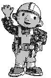
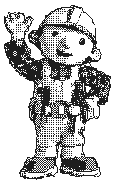
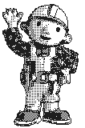

Pick a Bob
Tell Claude the code (e.g. F7). Pixel grid height in brackets: higher = finer pixels.
V3dithered photo (128)
V6 dithered photo (200)
dithered photo (200)
F5
flat tones (160)
F7
flat tones, white face (200)
F8
flat tones, white face (160)
F9 flat tones, white face (240)
flat tones, white face (240)
B + E combined (new)
E's hat and eyes right under the brim, B's body and clipboard, rounder, with a neck. Click one to use it as the "Bob is working" badge.
32 × 32 icons
Placed by hand after the reference. Click one: it becomes the "Bob is working" badge (saved in this browser). Shown at 4×, 2× and actual size.
Opening screen
Your reference Bob in the white-face flat style (F7), waving (the hand turns about the wrist).